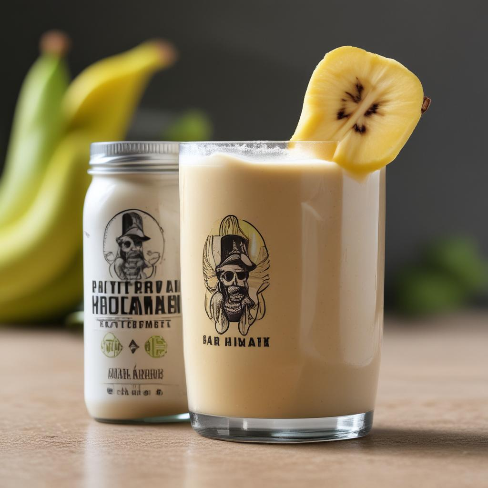

Licuado de proteina con platano
Ingredientes
- Leche (puede ser de almendra, soja, o cualquier otra de tu elección)
- 1 Platano
- Proteina Birdman sabor vainilla
- Una taza de hielo
Instrucciones
- Coloca todos los ingredientes en una licuadora.
- Mezcla a alta velocidad hasta que quede suave.
- Sirve inmediatamente y disfruta.

Pancakes de proteina de suero
Ingredientes
- 1 scoop de proteína de suero (sabor vainilla)
- 1 plátano maduro
- 2 huevos
- 1/2 taza de avena
- 1/2 cucharadita de polvo de hornear
- Una pizca de sal
Instrucciones
- Tritura el plátano en un bol grande.
- Agrega los huevos y bate bien.
- Añade la avena, la proteína de suero, el polvo de
hornear y la sal. Mezcla hasta obtener una masa homogénea.
- Calienta una sartén a fuego medio y engrasa ligeramente.
- Vierte un poco de la mezcla en la sartén y cocina hasta que
aparezcan burbujas en la superficie, luego da la vuelta y
cocina por el otro lado.
- Repite con el resto de la masa.
- Sirve con frutas frescas y miel si lo deseas.
Barras de proteina
Ingredientes
- 2 scoops de proteína de suero (sabor chocolate)
- 1 taza de avena
- 1/2 taza de mantequilla de maní
- 1/4 taza de miel
- 1/4 taza de leche
Instrucciones
- En un bol grande, mezcla la proteína de suero y la avena.
- En un recipiente aparte, calienta la mantequilla de maní y
la miel hasta que estén suaves y combinadas.
- Vierte la mezcla de mantequilla de maní sobre los
ingredientes secos y mezcla bien.
- Añade la leche poco a poco hasta obtener una mezcla homogénea.
- Coloca la mezcla en un molde para hornear y presiona firmemente.
- Refrigera durante al menos una hora.
- Corta en barras y guarda en el refrigerador.
Batido de proteina vegetal y bayas
Ingredientes
- 1 taza de leche vegetal (almendra, soja, etc.)
- 1 taza de bayas congeladas (fresas, arándanos, frambuesas)
- 1 scoop de proteína vegetal (sabor vainilla)
- 1 cucharada de semillas de chía
- 1 plátano
Instrucciones
- Coloca todos los ingredientes en una licuadora.
- Mezcla a alta velocidad hasta que quede suave.
- Sirve inmediatamente y disfruta.
Muffins de Proteína Vegetal
Ingredientes
- 1 1/2 tazas de harina integral
- 1 scoop de proteína vegetal (sabor vainilla)
- 1 cucharadita de bicarbonato de sodio
- 1/2 cucharadita de polvo de hornear
- 1/4 cucharadita de sal
- 2 plátanos maduros
- 1/4 taza de aceite de coco derretido
- 1/4 taza de azúcar de coco
- 1/2 taza de leche vegetal
- 1 cucharadita de extracto de vainilla
Instrucciones
- Precalienta el horno a 180°C (350°F) y engrasa un molde para muffins.
- En un bol grande, mezcla la harina, la proteína vegetal, el bicarbonato
de sodio, el polvo de hornear y la sal.
- En otro bol, tritura los plátanos y agrega el aceite de coco, el azúcar,
la leche vegetal y el extracto de vainilla. Mezcla bien.
- Combina los ingredientes húmedos con los secos y mezcla hasta que estén bien integrados.
- Vierte la mezcla en el molde para muffins, llenando cada espacio hasta 3/4 de su capacidad.
- Hornea durante 20-25 minutos o hasta que un palillo insertado en el centro salga limpio.
- Deja enfriar antes de desmoldar.
Brownies de Proteína Vegetal
Ingredientes
- 1 taza de puré de batata (camote)
- 1/2 taza de mantequilla de almendra
- 1/4 taza de cacao en polvo sin azúcar
- 1/4 taza de miel o jarabe de arce
- 1 scoop de proteína vegetal (sabor chocolate)
- 1/2 cucharadita de polvo de hornear
- Una pizca de sal
- 1/4 taza de chispas de chocolate (opcional)
Instrucciones
- Precalienta el horno a 180°C (350°F) y engrasa un molde cuadrado para hornear.
- En un bol grande, mezcla todos los ingredientes hasta obtener una masa homogénea.
- Vierte la mezcla en el molde y distribuye uniformemente.
- Si lo deseas, espolvorea las chispas de chocolate por encima.
- Hornea durante 20-25 minutos o hasta que los bordes estén firmes y el centro ligeramente suave.
- Deja enfriar antes de cortar en cuadrados.